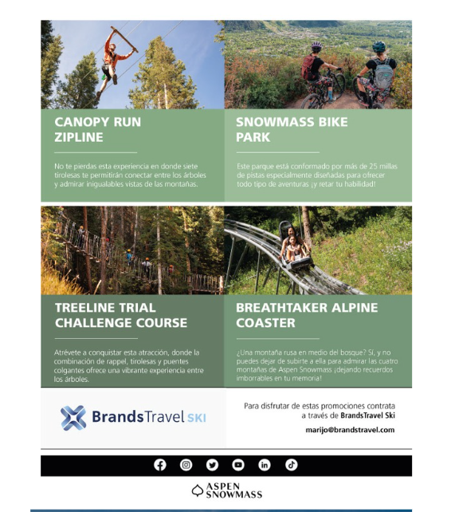
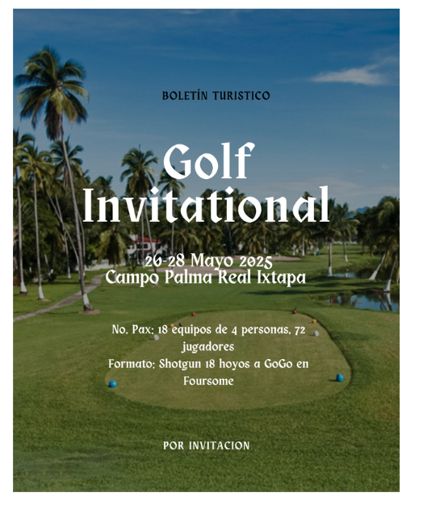

During my time as a PR Intern at BrandsTravel, I worked closely with account coordinators to develop new strategies for promoting our clients. My responsibilities included creating pitches for new campaigns, writing press releases, and designing newsletters. I also managed influencer collaborations and tracked their outreach. This internship gave me the opportunity to gain hands-on experience in public relations within an international agency based in Mexico.


The Brandman Agency
During my time at The Brandman Agency, I gained a strong
understanding of what it takes to be part of a PR agency. I
created various media lists, wrote journalist and influencer
pitches, and helped manage some of our clients' Instagram
accounts. Some of the clients I had the opportunity to work
with included Moxy Hotels, COMO Hotels and Resorts, La
Mamounia, and more. Through each task, I learned the level of
commitment and precision required to manage multiple
clients effectively in the field of Public Relations.
In the final months of my internship, I was assigned to create a
PR pitch for one of our clients. This process involved
brainstorming new ideas and finding creative ways to attract
fresh audiences. By the end of my internship, I had gained
valuable experience using platforms like Muck Rack,
Brandwatch, Excel, Slack, and Canva.
For my Integrated Marketing and Communications
class, my group and I were assigned to choose a
company, create a new product for them, and
develop a marketing plan. We decided to create a
perfume for Amika that could fit within their
existing collection. I was in charge of designing the
advertisements, using the same aesthetic and
inspiration as current Amika ads. In addition to
that, I collaborated on the competitive analysis,
identified our target audience, and helped create
an accurate advertising budget.